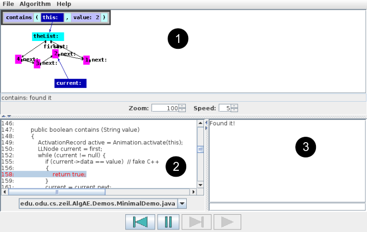

The basic AlgAE window has three main components:

The drawing area shows a picture of the data
structures being manipulated by the algorithm as it is running. Each
data object is portrayed as a box. Pointers or references between
objects are drawn as arrows.
AlgAE tries to arrange the boxes
on the page so that the interconnections between operations can be
perceived easily. If you don't like the arrange, you can move boxes
around by clicking on a box and dragging it to a new location.
Most animations will have a special object in the upper left
corner. This represents the call stack (a.k.a. the activation
stack) showing all function calls that are active at the moment,
including the parameters passed to those calls.
If the
picture of the data extends past the edges of the drawing area, then
scroll bars will appear that will allow you to move around the
viewing space. You can also use the zoom control to zoom in
and out on the data picture.
The code area shows the source code for the algorithm that is running. The current line of code about to be executed is highlighted in red. You can use the scroll bars to view other parts of the source code file. If the code being executed is split among multiple files, you can use the selector at the bottom to look at whichever file you want.
The I/O area shows any output written by the code to the standard output (i.e., cout in C++ or System.out in Java) and has a text entry box at the bottom in which you can type any input to be supplied to standard input (i.e., cin in C++ or System.in in Java)
The borders separating these 3 areas can be dragged from left to right or up and down to re-arrange the amount of space used for each area. For example, many algorithms will make little use of standard I/O, so you might want to give more room to the code area.